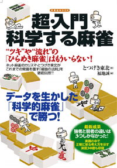
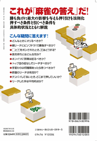
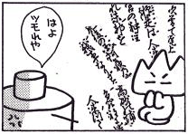
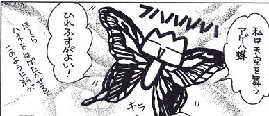
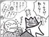

| （表紙）  |
（背表紙）  |
（表紙と背表紙です。 同じ本ですので誤解なきよう） |
| ↑Amazonで注文 | ↑セブンアンドワイで注文 |
とつげき東北[著]・福地誠[編] 『超入門・科学する麻雀』 （洋泉社）
書籍に関する「誤記・誤植等訂正」及び「質疑対応」
内容は？（※１１月２４日現在の予定です。内容は一部変更になる可能性があります）
ベストセラーとなった麻雀理論研究・戦術書 とつげき東北著『科学する麻雀』（講談社現代新書） を踏襲した第二弾か！？
『科学する麻雀』のように数式が多数登場するのか？
そう思って開いてみると、いきなり高梨くみさんのマンガ！！？
ぱらぱらとめくると、図やイラストが盛りだくさん。
麻雀戦術はもちろんのこと、多数の麻雀プロによる『科学する麻雀』への批判記事まで載っているではないか！？
この本は既存の「麻雀戦術書」の枠を打ち砕く本だ！
もちろん、戦術書としての内容は本格的だ。
福地誠さんが『科学する麻雀』に基づきつつ数式をとっぱらい、「読んで楽しく、わかりやすく、ためになる」戦術論をまとめてくれた。
実力アップは間違いない。
明確なリーチ判断・攻め降りの判断、実戦問題３０題などなど、戦術書として自信をもっておすすめできる。
しかし、それだけではないのだ！
・数々のギャグイラスト、マンガ
・東風最強雀士「氷室」氏・プロ小林剛氏との麻雀関係あれこれ裏話（メンバーバイトの実態・フリー雀荘逮捕経験談ほか）座談会
・最新の研究論文（上位層と下位層との実力差の91％を説明する３変数の特定）
・情報処理学会情報科学技術フォーラムにおける麻雀研究に関する発表紹介
などから始まり、さきほど述べた多数のプロ等による『科学する麻雀』への賛否両論や、さらには麻雀とは全く無関係のお笑い雑記まで、これでもかと一気に詰め込んだ渾身の一冊！ 麻雀を知らない人でさえ楽しめる！？
これはいったい、何というジャンルの本なんだろうか！？
こんなにおバカでためになる、しかも科学的な戦術書は存在しない。
なにはともあれ、麻雀ファン必読の１冊！！
※（）内は著者記入
【本文一部：科学する麻雀への賛否両論より】
（とあるプロによる批評）
少し読むと寝ちゃうから、結局全部読まなかったよ・・・
（え！？ それだけかあああっ！？）
【本文一部：座談会より】
（雀荘メンバーの実態について）
氷「手持ちで持っている（メンバー成績の）データのうち、最新の成績（と収入）は、こちら」
（表略）
凸「おお、これに給料加えたら、平均的に月収３５万とか超えるわけか。ついてれば５０万とかもあるんや……。月収５０万……『アカギしげる』クラスや。」
剛「どうしてアカギが月収たったの５０万なんですか！(笑)」
凸「かなり弱めのアカギやな。ベタオリばっかしてそう(笑)」
氷「ただこれは、まあメンバーの中で、ごく一部の人のみで(笑) 普通にこんなに儲かると思ってはいけない(笑)」
【本文一部：「無秩序コラム」より】
ワ「さっきの牌譜とデータ送って」
凸「あいよ」
眠い目をこすりながら、フォルダに入っている大量のファイルをメールにポンポンと添付していく。はい、送信。
凸「むっ……！？」
やべえええええ昨日ダウンロードしたイヤラシイ動画がフォルダに置いてあるうう！
どうしたんだおれよ！
なぜこんなところに置いてしまっているんだ！？
しかも女子高生シリーズ！
科学的に説明できないよ！！
【イラスト一部】
  
【本文一部：「麻雀技術において決定的な役割を果たす３つのパラメータについて」より】
筆者はインターネット対戦麻雀『東風荘』の『超上級ランキング卓』において、のべ100万局以上の牌譜を収集し、各実力層での種々の指標を集計した。
集計結果からさらに２次指標を作成し、実力に決定的な影響を与える指標を、重回帰分析等の多変量解析の手法に基づき探索した。
その結果、実力者の下位層と上位層との麻雀技術に決定的な差を与える３つのパラメータを特定し、比較的短いスパンの結果から実力を合理的に予測するための「公式」を導くことに成功した。
さあ、デジタルやオカルトの枠など飛び越えた、このカオスな「麻雀本」をぜひあなたの枕元か、トイレの片隅に。